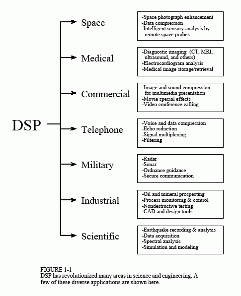

Chapter 1: The Breadth and Depth of DSP
Digital Signal Processing - Xử lý tín hiệu số là một trong những công nghệ mạnh mẽ nhất sẽ định hình khoa học và kỹ thuật trong thế kỷ XXI. Những thay đổi mang tính cách mạng đã được thực hiện trong nhiều lĩnh vực: thông tin liên lạc, hình ảnh y tế, radar và sóng siêu âm, tái tạo âm nhạc có độ trung thực cao và thăm dò dầu khí, chỉ kể tên một số lĩnh vực. Mỗi lĩnh vực này đã phát triển một công nghệ DSP sâu, với các thuật toán, toán học và kỹ thuật chuyên biệt riêng. Sự kết hợp giữa hơi thở và độ sâu này khiến cho bất kỳ cá nhân nào không thể thành thạo tất cả công nghệ DSP đã được phát triển. Giáo dục DSP bao gồm hai nhiệm vụ: học các khái niệm chung áp dụng cho toàn bộ lĩnh vực này và học các kỹ thuật chuyên biệt cho lĩnh vực bạn quan tâm cụ thể. Chương này bắt đầu hành trình của chúng ta vào thế giới Xử lý tín hiệu số bằng cách mô tả hiệu ứng ấn tượng mà DSP đã tạo ra trong một số lĩnh vực khác nhau. Cuộc cách mạng đã bắt đầu.
The Roots of DSP
Nguồn gốc của DSP
Xử lý tín hiệu số được phân biệt với các lĩnh vực khác trong khoa học máy tính bởi loại dữ liệu duy nhất mà nó sử dụng: tín hiệu. Trong hầu hết các trường hợp, các tín hiệu này có nguồn gốc dưới dạng dữ liệu cảm giác từ thế giới thực: rung động địa chấn, hình ảnh trực quan, sóng âm thanh, v.v. DSP là toán học, thuật toán và kỹ thuật được sử dụng để xử lý các tín hiệu này sau khi chúng được chuyển đổi thành dạng kỹ thuật số. Điều này bao gồm nhiều mục tiêu khác nhau, chẳng hạn như: nâng cao hình ảnh trực quan, nhận dạng và tạo giọng nói, nén dữ liệu để lưu trữ và truyền tải, v.v. Giả sử chúng ta gắn bộ chuyển đổi tương tự sang kỹ thuật số vào máy tính và sử dụng nó để thu được một đoạn dữ liệu trong thế giới thực. DSP trả lời câu hỏi: Tiếp theo là gì?
Nguồn gốc của DSP bắt nguồn từ những năm 1960 và 1970 khi máy tính kỹ thuật số lần đầu tiên xuất hiện. Máy tính rất đắt tiền trong thời đại này và DSP chỉ giới hạn ở một số ứng dụng quan trọng. Những nỗ lực tiên phong đã được thực hiện trong bốn lĩnh vực chính: radar & sonar, nơi an ninh quốc gia bị đe dọa; thăm dò dầu mỏ, nơi có thể kiếm được số tiền lớn; thám hiểm không gian, nơi dữ liệu không thể thay thế được; và hình ảnh y tế, nơi có thể cứu sống nhiều mạng sống. Cuộc cách mạng máy tính cá nhân những năm 1980 và 1990 đã khiến DSP bùng nổ với những ứng dụng mới. Thay vì được thúc đẩy bởi nhu cầu của quân đội và chính phủ, DSP đột nhiên bị thúc đẩy bởi thị trường thương mại. Bất cứ ai nghĩ rằng họ có thể kiếm tiền trong lĩnh vực đang mở rộng nhanh chóng này bỗng nhiên trở thành nhà cung cấp DSP. DSP đến với công chúng qua các sản phẩm như: điện thoại di động, đầu đĩa compact và thư thoại điện tử. Hình 1-1 minh họa một số ứng dụng đa dạng này.
Cuộc cách mạng công nghệ này diễn ra từ trên xuống. Vào đầu những năm 1980, DSP được giảng dạy như một khóa học sau đại học về kỹ thuật điện. Một thập kỷ sau, DSP đã trở thành một phần tiêu chuẩn của chương trình giảng dạy đại học. Ngày nay, DSP là kỹ năng cơ bản cần thiết của các nhà khoa học và kỹ sư trong nhiều lĩnh vực. Tương tự, DSP có thể được so sánh với cuộc cách mạng công nghệ trước đó: điện tử. Mặc dù vẫn là lĩnh vực kỹ thuật điện nhưng gần như mọi nhà khoa học và kỹ sư đều có kiến thức nền tảng về thiết kế mạch cơ bản. Không có nó, họ sẽ lạc lối trong thế giới công nghệ. DSP có cùng tương lai.

Lịch sử gần đây này không chỉ là sự tò mò; nó có tác động to lớn đến khả năng học hỏi và sử dụng DSP của bạn. Giả sử bạn gặp phải vấn đề về DSP và tìm đến sách giáo khoa hoặc các ấn phẩm khác để tìm giải pháp. Những gì bạn thường thấy là hết trang này đến trang khác của các phương trình, những ký hiệu toán học khó hiểu và những thuật ngữ xa lạ. Đó là một cơn ác mộng! Phần lớn tài liệu về DSP gây bối rối ngay cả với những người có kinh nghiệm trong lĩnh vực này. Không có gì sai với tài liệu này, nó chỉ dành cho một đối tượng rất chuyên biệt. Các nhà nghiên cứu tiên tiến cần loại toán học chi tiết này để hiểu được ý nghĩa lý thuyết của công trình.
Tiền đề cơ bản của cuốn sách này là hầu hết các kỹ thuật DSP thực tế đều có thể được học và sử dụng mà không gặp trở ngại truyền thống về lý thuyết và toán học chi tiết. Hướng dẫn dành cho nhà khoa học và kỹ sư về xử lý tín hiệu số được viết dành cho những ai muốn sử dụng DSP như một công cụ chứ không phải cho một nghề nghiệp mới.
Phần còn lại của chương này minh họa các lĩnh vực mà DSP đã tạo ra những thay đổi mang tính cách mạng. Khi bạn xem qua từng ứng dụng, hãy lưu ý rằng DSP có tính liên ngành rất cao, dựa vào công việc kỹ thuật trong nhiều lĩnh vực lân cận. Như Hình 1-2 cho thấy, ranh giới giữa DSP và các lĩnh vực kỹ thuật khác không rõ ràng và rõ ràng mà khá mờ và chồng chéo. Nếu bạn muốn chuyên về DSP, đây là những lĩnh vực liên quan mà bạn cũng sẽ cần phải nghiên cứu.
Telecommunications
Viễn thông
Viễn thông là về việc truyền thông tin từ nơi này đến nơi khác. Điều này bao gồm nhiều dạng thông tin: cuộc trò chuyện qua điện thoại, tín hiệu truyền hình, tệp máy tính và các loại dữ liệu khác. Để truyền thông tin, bạn cần có một kênh giữa hai địa điểm. Đây có thể là đôi dây, tín hiệu vô tuyến, cáp quang, v.v. Các công ty viễn thông nhận tiền truyền tải thông tin của khách hàng, trong khi họ phải trả tiền để thiết lập và duy trì kênh. Điểm mấu chốt về mặt tài chính rất đơn giản: càng có nhiều thông tin được truyền qua một kênh thì họ càng kiếm được nhiều tiền. DSP đã cách mạng hóa ngành viễn thông trong nhiều lĩnh vực: tạo và phát hiện âm báo hiệu, dịch chuyển băng tần, lọc để loại bỏ tạp âm trên đường dây điện, v.v. Ba ví dụ cụ thể từ mạng điện thoại sẽ được thảo luận ở đây: ghép kênh, nén và điều khiển tiếng vang.
Multiplexing
Có khoảng một tỷ điện thoại trên thế giới. Chỉ cần nhấn một vài nút, mạng chuyển mạch cho phép bất kỳ mạng nào trong số này được kết nối với bất kỳ mạng nào khác chỉ trong vài giây. Sự to lớn của nhiệm vụ này thật đáng kinh ngạc! Cho đến những năm 1960, kết nối giữa hai điện thoại yêu cầu truyền tín hiệu thoại analog thông qua các bộ chuyển mạch và bộ khuếch đại cơ học. Một kết nối cần một cặp dây. Để so sánh, DSP chuyển đổi tín hiệu âm thanh thành luồng dữ liệu kỹ thuật số nối tiếp. Vì các bit có thể dễ dàng đan xen và sau đó tách ra nên nhiều cuộc trò chuyện qua điện thoại có thể được truyền trên một kênh duy nhất. Ví dụ, một tiêu chuẩn điện thoại được gọi là hệ thống sóng mang T có thể truyền đồng thời 24 tín hiệu thoại. Mỗi tín hiệu giọng nói được lấy mẫu 8000 lần mỗi giây bằng cách sử dụng chuyển đổi tương tự sang số được nén 8 bit (nén logarit). Điều này dẫn đến mỗi tín hiệu thoại được biểu diễn dưới dạng 64.000 bit/giây và tất cả 24 kênh được chứa ở mức 1,544 megabit/giây. Tín hiệu này có thể được truyền đi khoảng 6000 feet bằng cách sử dụng đường dây điện thoại thông thường bằng dây đồng 22 gauge, khoảng cách kết nối điển hình. Lợi thế tài chính của truyền dẫn kỹ thuật số là rất lớn. Công tắc dây và analog đắt tiền; cổng logic kỹ thuật số có giá rẻ.
Compression
Khi tín hiệu thoại được số hóa ở tốc độ 8000 mẫu/giây, hầu hết thông tin số đều dư thừa. Nghĩa là, thông tin được mang theo bởi một mẫu bất kỳ sẽ bị nhân đôi phần lớn bởi các mẫu lân cận. Hàng chục thuật toán DSP đã được phát triển để chuyển đổi tín hiệu giọng nói số hóa thành luồng dữ liệu yêu cầu ít bit/giây hơn. Chúng được gọi là thuật toán nén dữ liệu. Các thuật toán giải nén phù hợp được sử dụng để khôi phục tín hiệu về dạng ban đầu. Các thuật toán này khác nhau về mức độ nén đạt được và chất lượng âm thanh thu được. Nói chung, việc giảm tốc độ dữ liệu từ 64 kilobit/giây xuống 32 kilobit/giây sẽ không làm giảm chất lượng âm thanh. Khi được nén ở tốc độ dữ liệu 8 kilobit/giây, âm thanh bị ảnh hưởng rõ rệt nhưng vẫn có thể sử dụng được cho các mạng điện thoại đường dài. Mức nén cao nhất có thể đạt được là khoảng 2 kilobit/giây, dẫn đến âm thanh bị méo nhiều nhưng vẫn có thể sử dụng được cho một số ứng dụng như liên lạc quân sự và dưới biển.
Echo control
Tiếng vọng là một vấn đề nghiêm trọng trong kết nối điện thoại đường dài. Khi bạn nói vào điện thoại, tín hiệu thể hiện giọng nói của bạn sẽ truyền đến bộ thu kết nối, nơi một phần tín hiệu sẽ phản hồi dưới dạng tiếng vang. Nếu kết nối trong phạm vi vài trăm dặm, thời gian nhận được tiếng vang chỉ là vài mili giây. Tai con người đã quen với việc nghe thấy tiếng vang với độ trễ thời gian nhỏ này và kết nối nghe khá bình thường. Khi khoảng cách trở nên lớn hơn, tiếng vang ngày càng đáng chú ý và khó chịu. Độ trễ có thể lên tới vài trăm mili giây đối với liên lạc xuyên lục địa và có thể bị phản đối về mặt đặc biệt. Xử lý tín hiệu số xử lý loại vấn đề này bằng cách đo tín hiệu phản hồi và tạo ra tín hiệu phản tín hiệu thích hợp để loại bỏ tiếng vang vi phạm. Kỹ thuật tương tự này cho phép người dùng loa ngoài nghe và nói cùng lúc mà không gặp phải phản hồi âm thanh (tiếng rít). Nó cũng có thể được sử dụng để giảm tiếng ồn môi trường bằng cách khử tiếng ồn bằng chất chống ồn được tạo ra bằng kỹ thuật số.
Audio Processing
Xử lý âm thanh
Hai giác quan chính của con người là thị giác và thính giác. Tương ứng, phần lớn DSP liên quan đến xử lý hình ảnh và âm thanh. Mọi người nghe cả âm nhạc và lời nói. DSP đã thực hiện những thay đổi mang tính cách mạng trong cả hai lĩnh vực này.
Music
Con đường dẫn từ micrô của nhạc sĩ đến loa của người nghe nhạc rất dài. Việc biểu diễn dữ liệu số là quan trọng để ngăn chặn sự xuống cấp thường liên quan đến việc lưu trữ và thao tác tương tự. Điều này rất quen thuộc với những ai từng so sánh chất lượng âm nhạc của băng cassette với đĩa compact. Trong một kịch bản điển hình, một bản nhạc được ghi lại trong phòng thu âm trên nhiều kênh hoặc bản nhạc. Trong một số trường hợp, điều này thậm chí còn liên quan đến việc thu âm riêng từng nhạc cụ và ca sĩ. Điều này được thực hiện để giúp kỹ sư âm thanh linh hoạt hơn trong việc tạo ra sản phẩm cuối cùng. Quá trình phức tạp của việc kết hợp các bản nhạc riêng lẻ thành một sản phẩm cuối cùng được gọi là trộn lẫn. DSP có thể cung cấp một số chức năng quan trọng trong quá trình trộn, bao gồm: lọc, cộng và trừ tín hiệu, chỉnh sửa tín hiệu, v.v.
Một trong những ứng dụng DSP thú vị nhất trong việc chuẩn bị âm nhạc là âm vang nhân tạo. Nếu các kênh riêng lẻ được thêm vào một cách đơn giản, thì bản nhạc thu được sẽ có âm thanh yếu và loãng, giống như thể các nhạc sĩ đang chơi ngoài trời. Điều này là do người nghe bị ảnh hưởng rất nhiều bởi nội dung tiếng vang hoặc độ vang của âm nhạc, vốn thường được giảm thiểu trong phòng thu âm. DSP cho phép thêm tiếng vang và âm vang nhân tạo trong quá trình trộn để mô phỏng các môi trường nghe lý tưởng khác nhau. Tiếng vang có độ trễ vài trăm mili giây tạo ấn tượng về các địa điểm giống như thánh đường. Việc thêm tiếng vang với độ trễ 10-20 mili giây mang lại cảm nhận về các phòng nghe có kích thước khiêm tốn hơn.
Speech generation
Việc tạo và nhận dạng giọng nói được sử dụng để giao tiếp giữa con người và máy móc. Thay vì sử dụng tay và mắt, bạn sử dụng miệng và tai. Điều này rất thuận tiện khi tay và mắt của bạn phải làm việc khác, chẳng hạn như: lái xe, thực hiện phẫu thuật hoặc (không may) bắn vũ khí của bạn vào kẻ thù. Hai phương pháp được sử dụng cho giọng nói do máy tính tạo ra: ghi âm kỹ thuật số và mô phỏng giọng nói. Trong ghi âm kỹ thuật số, giọng nói của người nói được số hóa và lưu trữ, thường ở dạng nén. Trong khi phát lại, dữ liệu được lưu trữ sẽ không bị nén và chuyển đổi trở lại thành tín hiệu analog. Toàn bộ giờ phát biểu được ghi lại chỉ cần khoảng ba megabyte dung lượng lưu trữ, nằm trong khả năng của ngay cả những hệ thống máy tính nhỏ. Đây là phương pháp tạo giọng nói kỹ thuật số phổ biến nhất được sử dụng ngày nay.
Trình mô phỏng đường phát âm phức tạp hơn, cố gắng bắt chước các cơ chế vật lý mà con người tạo ra lời nói. Đường thanh âm của con người là một khoang âm thanh có tần số cộng hưởng được xác định bởi kích thước và hình dạng của các khoang. Âm thanh bắt nguồn từ đường hô hấp theo một trong hai cách cơ bản, được gọi là âm thanh hữu thanh và âm xát. Với các âm hữu thanh, sự rung động của dây thanh âm tạo ra các xung không khí gần như định kỳ đi vào khoang thanh âm. Để so sánh, âm thanh ma sát bắt nguồn từ sự nhiễu loạn không khí ồn ào ở những điểm co hẹp, chẳng hạn như răng và môi. Bộ mô phỏng đường thanh âm hoạt động bằng cách tạo ra các tín hiệu số giống với hai loại kích thích này. Các đặc tính của buồng cộng hưởng được mô phỏng bằng cách truyền tín hiệu kích thích qua bộ lọc kỹ thuật số có độ cộng hưởng tương tự. Cách tiếp cận này đã được sử dụng trong một trong những câu chuyện thành công đầu tiên của DSP, Speak & Spell, một công cụ hỗ trợ học tập điện tử được bán rộng rãi dành cho trẻ em.
Speech recognition
Việc nhận dạng tự động giọng nói của con người khó khăn hơn nhiều so với việc tạo ra giọng nói. Nhận dạng giọng nói là một ví dụ điển hình về những việc mà bộ não con người làm tốt nhưng máy tính kỹ thuật số lại làm kém. Máy tính kỹ thuật số có thể lưu trữ và gọi lại lượng dữ liệu khổng lồ, thực hiện các phép tính toán học với tốc độ chóng mặt và thực hiện các nhiệm vụ lặp đi lặp lại mà không cảm thấy nhàm chán hoặc kém hiệu quả. Thật không may, máy tính ngày nay hoạt động rất kém khi phải đối mặt với dữ liệu giác quan thô. Dạy máy tính gửi hóa đơn tiền điện hàng tháng cho bạn thật dễ dàng. Dạy cho cùng một máy tính hiểu được giọng nói của bạn là một công việc quan trọng.
Xử lý tín hiệu số thường tiếp cận vấn đề nhận dạng giọng nói theo hai bước: trích xuất tính năng, sau đó là khớp tính năng. Mỗi từ trong tín hiệu âm thanh đến được tách biệt và sau đó được phân tích để xác định loại tần số kích thích và cộng hưởng. Sau đó, các tham số này được so sánh với các ví dụ về từ được nói trước đó để xác định kết quả khớp nhất. Thông thường, những hệ thống này chỉ giới hạn ở vài trăm từ; chỉ có thể chấp nhận lời nói với những khoảng dừng rõ ràng giữa các từ; và phải được đào tạo lại cho từng diễn giả. Mặc dù điều này đủ cho nhiều ứng dụng thương mại nhưng những hạn chế này vẫn còn khiêm tốn khi so sánh với khả năng nghe của con người. Có rất nhiều việc phải làm trong lĩnh vực này, với những phần thưởng tài chính to lớn dành cho những ai sản xuất ra các sản phẩm thương mại thành công.